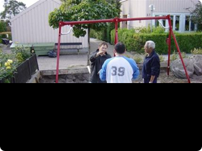
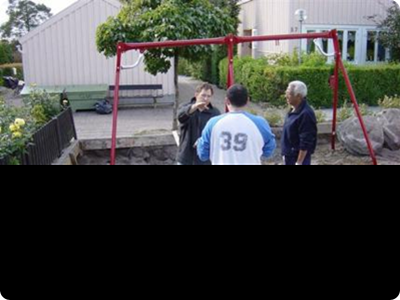
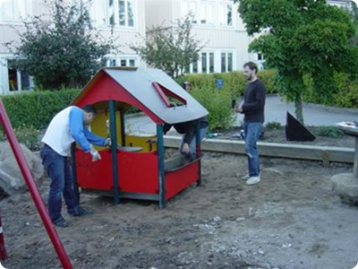
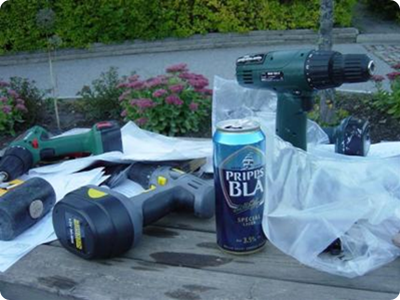
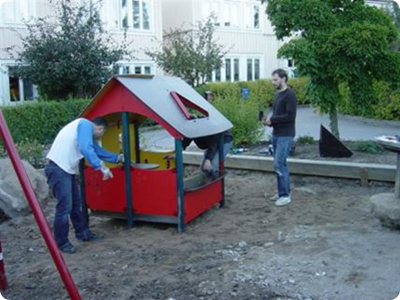
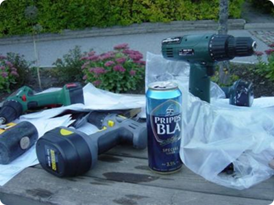

Styrelseprotokoll
Konstituerande-2024-12-16
Årsmöteprotokoll
2024-11-28
Ribeinfo
Ekonomisk
förvaltare
Ribe Samfällighetsförening ekonomiska förvaltare är Redisa som har fått
förtroendet att sköta föreningens ekonomiska förvaltning. Det innebär att vi hjälper föreningen
med t.ex. redovisning och bokföring. Det är också från oss du får dina avier för
medlemsavgiften.
De avier du får nu är för perioden juli t o m september och de första Redisa skickar ut.
Vi vill uppmärksamma dig på att samfällighetsföreningen har ett nytt
bankgironummer – det är därför viktigt att du betalar in avgiften på det
bankgironummer som finns angivet på avin.
De första avierna som skickas till dig från Redisa kommer att vara vanliga pappersavier som du
måste betala manuellt.
Vi aviserar fyra gånger per år och du får då tre avier åt gången. All avisering via e-post är
kostnadsfri.
Efter att du har erhållit de första avierna från Redisa är det viktigt att du ändrar
aviseringssätt eftersom all avisering är kostnadsfri om den sker digitalt, via e-post. Om du
inte gör någon ändring av aviseringssätt kommer pappersavier fortsätta att skickas ut. Det är då
viktigt att känna till att det påförs en aviseringskostnad om 50 kr per
aviseringstillfälle från Redisa.
Anmäl din e-postadress här: medlem@redisa.se
Du som tidigare har betalat avgiften med autogiro måste nu vid denna avisering betala manuellt då
autogirot inte fungerar på grund av att föreningen har ett nytt bankgironummer. Vill du i
fortsättningen betala med autogiro måste du kontakta din bank. Först när ansökan är gjord och
behandlad av banken kan vi hantera din avisering via autogiro.
Eftersom Redisa inte får information från banken när autogirot är registrerat behöver du meddela
oss när det är klart. Det gör du enklast via e-postadressen nedan. Observera att autogirot
kommer att kunna används först vid nästa aviseringstillfälle, det är därför viktigt att betala
avierna för juli till september manuellt.
Det kommer att vara möjligt att betala genom e-faktura från och med kvartal 4.
För frågor rörande avisering, avier och autogiro kan ni kontakta oss på: medlem@redisa.se
Bokning av tvättstuga
Enligt årsstämmobeslut den 25 november 2021 kommer tvättavgiften per pass att ändras från 20
kronor till 40 kronor. Den nya avgiften startar 1 februari 2022.
De boende som är intresserade av att använda tjänsten kan kontakta styrelsen via mejl: styrelsen@ribegatan.se
Då får ni uppgifter per mejl, användarnamn, lösenord och information, hur man får tillgång till
portalen.
Föreningens matavfallskärl
Observera! Vanliga hushållssopor får absolut inte
läggas i matfallskärl behållarna.
Börja sortera matavfall. Ni är ett fåtal som ännu inte har hämtat ut era
matfallspåsar och behållare. Kontakta er områdesansvarige som hjälper er. Vi uppmanar alla
medlemmar inom Ribe att sortera sina sopor och matavfall. Nästan 40 % av det som hamnar i
soppåsen är matavfall. Om matresterna istället sorteras ut kan de omvandlas till biogas och
biogödsel. Var med du också och låt dina matraster jobba för klimatet.
Matavfall kostnad. Tömning av matavfall är kostnadsfritt för föreningen vilket
medför att vi sänker våra kostnader för vår sophämtningen samt vi bidrar till klimaet.
Matavfalspåsar. Inne i entrén på hatthyllan i varje områdeslokal kan ni
medlemmar hämta en bunt avfallspåsar själva. Det kommer att fyllas på kontinuerligt med påsar
men vänligen ta bara en bunt per hushåll vid varje tillfälle. Om de är slut, gå till nästa
områdeslokal och hämta där eller kontakta er områdesansvarige.
Sortering avfall. Detta skall sorteras ut hemma i din fastighet med hämtad
avfalsskorg och avfallspåse. Om du inte har sorterat upp får du inte använda matavfallskärlen
för dina sopor.
Var lägger vi matavfalspåsarna. Vid våra sopbehållare finns det bruna
matavfallskärl behållare som är enbart avsedda för matavfall.
Det görs stickprovskontroller och om det inte sköts kommer vårt matfallsabonnemang dras in.
Ska ni sälja ert hus eller anmäla
ägarförändring?
Glöm inte att informera styrelsen vilka de nya ägarna är och när de flyttar in eller om det har
skett ägarförändring. Du hittar blankett för Ägarbyte under Samfälligheten/Arkiv&Blanketter.
Vid försäljning så krävs det en Energideklarationen. Underlag för denna är husets senaste
avräkning för värme/vatten förbrukning. Se Hem/Ägarbyte.
Samfällighetsföreningen driver
Grannsamverkan
Huvudkontaktombud är Lise-Lotte Smedberg, Ribegatan 75. Läs mer om grannsamverkan under Området,
Grannsamverkan, uppdaterad info med länkar och bild till information för att förbättra
inbrottsskyddet.
Information om händelser i området meddelas på info tavlorna i området. Uppsatta vid garagen och
tvättstugorna/hobbylokal.
Grannsamverkan har en Facebook grupp och alla Ribebor är välkomna. Information till gruppen är
händelser i området, indelning kontaktombud i området, polisinfo om händelser i Kista närområde
och polisens månadsbrev. Gruppen kan också rapportera till gruppen om de ser eller ha sett något
misstänkt.
För att gå med klicka på länken: Grannsamverkan i kv Ribe Kista
För att kunna läsa kommentarer behöver man ansöka för att komma med i gruppen.
Polisen informerar om förebyggande råd och tips.
Följ närpolisen i Kista i Facebook via länken: Polisen Kista Näpo
Uppmärksamma - Agera - Larma
Vid pågående larma polisen - Ring 112.
Vid något skumt/bostad tipsa polisen - Ring 11414
Vi bör vara vaksamma och försvåra för ovälkomna besökare genom att hjälpas åt med att:
- tända ytterbelysningar - både på fram- och baksidor
- klippa ner skymmande häckar
Här är en länk till en sida om grannsamverkan, som handlar om allmänna förebyggande åtgärder för
att lura tjuven.
Besöksparkering
Leverantör av besöksparkering är EasyPark eller APCOA Flow
Avgiften för besöksparkeringen 00-24 uppges i appen. Min debitering är en timme.
Zon namn för EasyPark: 50622
APCOA flow: 3897 - RIBE SFF BESÖKSPARKERING, STOCKHOLM
Parkering görs via APP och betalningssätt väljs vid registrering.
Tjänsten fungerar oavsett abonnemang/telefon så parkeringen är inte knutet till något mobil
abonnemang. Man kan registrera sin parkering till ett oregistrerat kontantkort.
APP parkering via SMART phone. Ladda ner SMS Park eller APCOA Flow
Instruktion med skylt finns vid besöksparkeringen hur man startar och avslutar en parkering via
SMS Park eller APCOA Flow.
Timdebitering går över automatiskt till dygnsdebitering.
Om det känns bekvämt kan du registrera dina gästers parkering. Man kan registrera ett
registreringsnummer upp till nio tecken i fall besök från utlandet.
För parkering på huvudgatan Ribegatan gäller kommunens bestämmelser.
Parkeringsbolag
Inom föreningens område så sköter Apcoa om vår bevakning av våra besöksparkeringar och vägarna
inom vårt område. Parkering inom området gäller max 5 minuter enligt Stockholm stads
parkeringsregler.
Vid felanmälan kontakta Apcoa på telefonnummer 0771-401020. För ytterligare
information se parkeringsbolag.
Inför Årsstämma
Motioner ska vara styrelsen tillhanda senast 30 september.
Du kan antingen e-posta in din motion till styrelsen eller lägga den i brevlådan på Ribegatan 77
(tvättstugan omr 3).
Besiktning krypgrunder
Anticimex har besiktat områdets krypgrunder när det gäller skadedjur och andra brister i områdets
krypgrunder.
Besiktnings protokollet och åtgärdsprogram finns under fliken Husen.
Snöröjning
Alla vägar inom Ribe samfällighetsförening snöröjs på samfällighetens uppdrag av Raines Maskin &
Entreprenad som är föreningens entreprenör för snöröjning.
Snöröjning av Ribegatan från Jyllandsgatan till vändplanen längst upp på gatan sköts av
Stockholms Gatukontor och deras entreprenörer.
Anmälningsplikt till styrelsen och
skyldigheter för husen
- Anmälningsplikt vid förändringar i rördragningar i krypgrunden.
- Anmälningsplikt vid installationsarbeten i värmesystemet.
- Även tidigare utförda arbeten i mätarskåpen måste anmälas till styrelsen.
- Medlemmarna har skyldighet att se till att ventilationen i huset fungerar.
- Medlemmarna har skyldighet att se till att ventilationsöppningarna till krypgrunden inte är
tilltäppta, att näten är hela samt att det är lättåtkomligt för inspektion.
Mer detaljerad information finns under fliken Husen.
Målning av egna huset
Styrelsen har fått flera frågor om vilken färg och vilken kulör som bör användas till våra hus.
Läs mer under flikarna Husen.
Utebliven sophämtning!
Behållarna skall tömmas 1 gång i veckan. Om du har synpunkter på sophämtningen ringer du telefon
08-508 465 40 och uppger vilken/vilka sopbehållare på Ribegatan det gäller.
Våra grönområden!
Vill du vara med och sköta någon rabatt? Arvode betalas per timme.
Hör av dig till styrelsen.


 

 


